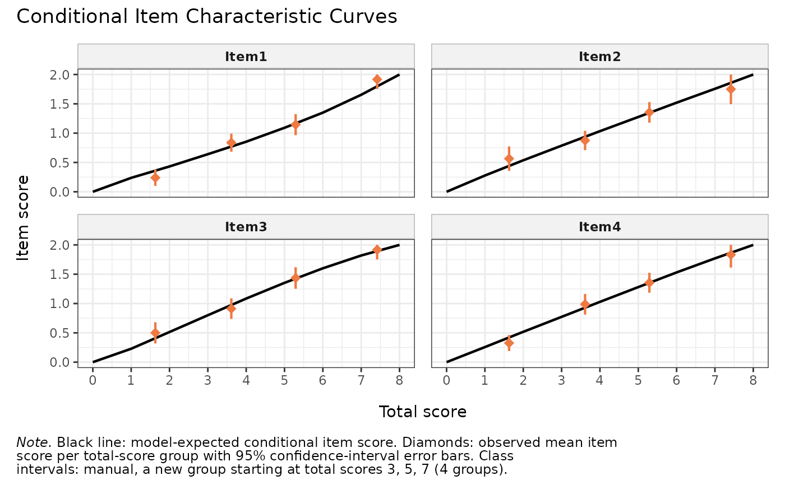
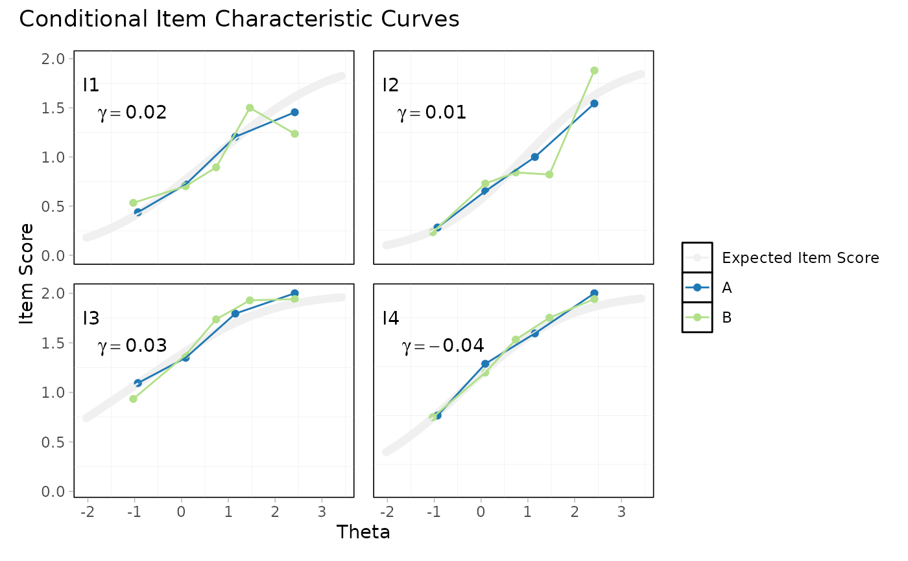

Faceted panel of Conditional Item Characteristic Curves (cICCs) for all
items in data. Each panel shows the model-expected ICC together with
average observed item scores within class intervals (or for every
possible total score, with method = "score"). When a dif_var is
supplied, observed averages are computed separately per group, so each
panel becomes a visual DIF check.
Arguments
- data
A data.frame or matrix of item responses (non-negative integers, 0-based). One column per item, one row per person.
- class_intervals
Integer. Number of class intervals used to group respondents when
method = "cut". Default4. Each class interval needs enough respondents to compute a stable average observed item score; with small samples or many possible total scores, lower this. Ignored whenmethod = "score".- method
One of
"cut"(default) or"score"."cut"groups respondents intoclass_intervalsadjacent bins;"score"uses every possible total raw score.- dif_var
Optional vector of length
nrow(data)(factor or coercible to factor) defining a DIF grouping variable. When supplied, observed averages are shown separately per group. DefaultNULL(no DIF).- output
One of
"patchwork"(default) – composite patchwork figure – or"list"– a named list of per-itemggplotobjects.
Value
Either a ggplot / patchwork composite (default), or a
list of ggplot objects (output = "list"), one per item.
Details
Wraps iarm::ICCplot() (Santiago, Mueller, & Müller, 2022) for the
per-item computation and composes the panels with patchwork::wrap_plots().
Class intervals vs every total score. With method = "cut"
(the default) respondents are divided into class_intervals bins of
roughly equal size based on their total raw score; each bin's average
observed item score is plotted as a point. With method = "score",
the average observed item score is computed for every observed total
raw score. The cut method is the conventional Rasch-analysis default
and works well at moderate sample sizes; the score method is more
granular but can be unstable when raw-score totals are sparsely
populated.
DIF mode. With dif_var supplied, iarm::ICCplot() computes
average observed item scores separately for each level of the
grouping variable. Each item's panel then shows the model-expected
ICC (one black line) plus one set of observed points per DIF group.
Stark visual divergence between groups suggests DIF.
Dependencies. Requires iarm for the per-item curve, and
patchwork + ggplot2 for the figure composition. All three are in
Suggests with runtime guards.
References
Mueller, M., & Santiago, P. H. R. (2022). iarm: Item Analysis in Rasch Models. R package version 0.4.3. https://CRAN.R-project.org/package=iarm
Examples
# \donttest{
data("pcmdat2", package = "eRm")
# NB: with `method = "cut"` the quantile-based binning of total scores
# may collapse to fewer bins than requested when the score
# distribution is peaked. `pcmdat2` happens to accept 3 or 5 but
# not 4. See `?iarm::ICCplot`; `method = "score"` avoids the issue.
RMitemICCPlot(pcmdat2, class_intervals = 5)

# With DIF grouping
set.seed(1)
grp <- factor(sample(c("A", "B"), nrow(pcmdat2), replace = TRUE))
RMitemICCPlot(pcmdat2, class_intervals = 5, dif_var = grp)

# }